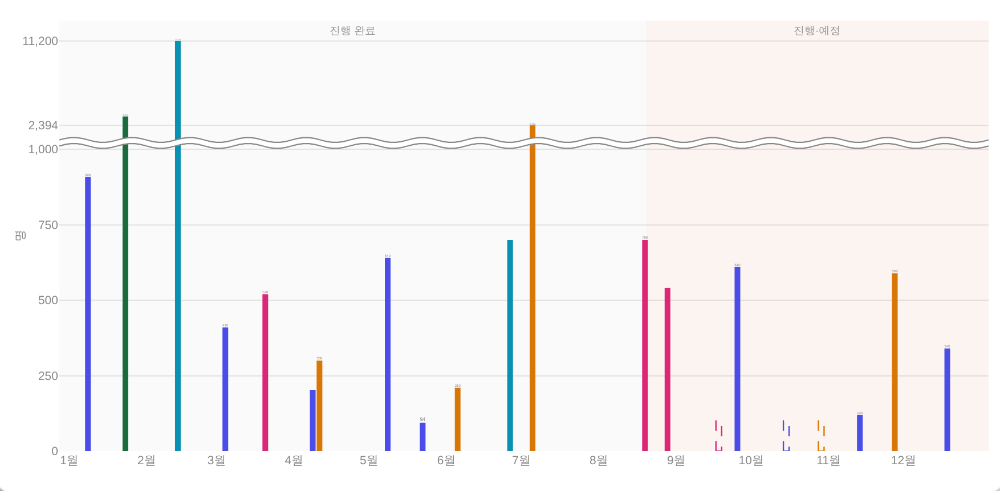
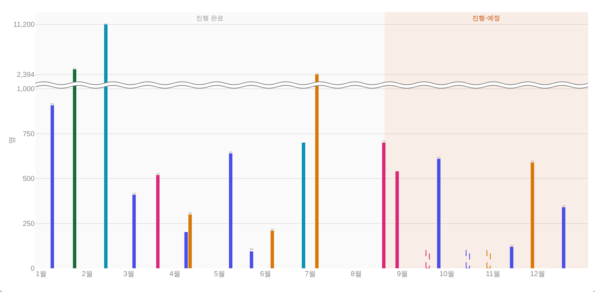
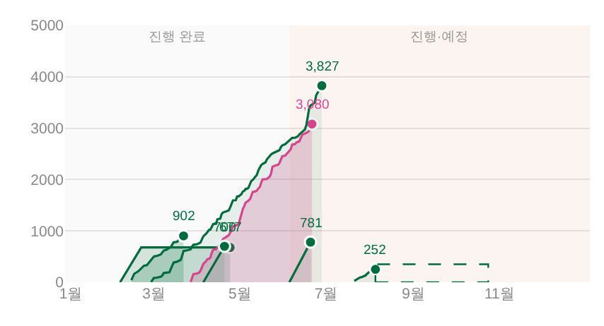
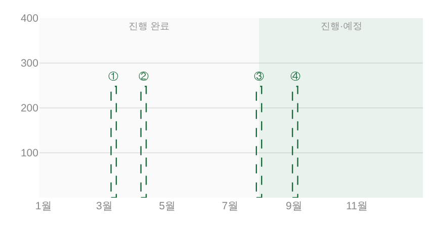
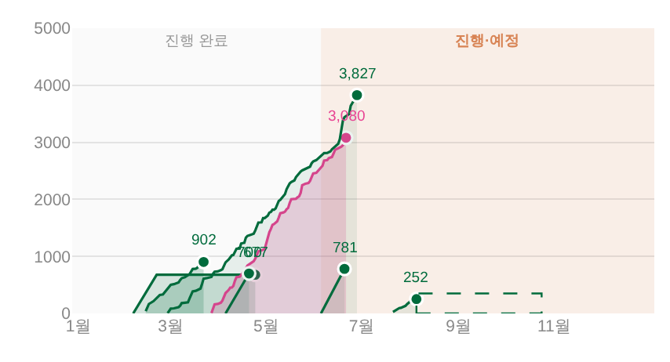
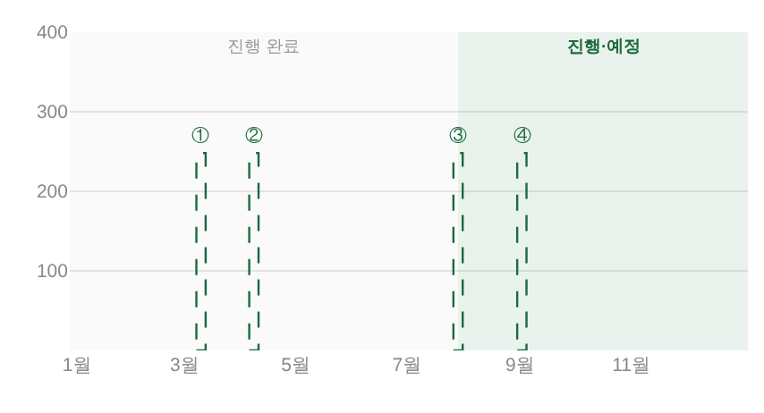

지시(운영자 260808) 「진행 예정이랑 아닌거 구분좀 더 확실하게 되게해줘, 예술교육 수준으로는 도드라져야할듯」 ·
대상 = _bizYearZones(공연 판매현황 막대 · 기획 전시 누적범위 · 예술교육 월별 게이지 세 카드 공용) ·
화면 = 결정적 목데이터(tools/qa_mock_ops.mjs) ?qa=admin 1920×1080 · 실API·실데이터·PII 미접촉.
구획 음영 = 분야색의 alpha 변주 한 장. 그런데 같은 alpha라도 어두운 색은 짙게, 밝은 색은 옅게 깔린다. 그 편차가 그대로 「보이냐 안 보이냐」로 갈렸다 — 운영자가 지목한 예술교육(딥그린)만 경계가 읽히고, 공연·전시(살몬)는 두 구획이 붙어 보였다.
| 카드 | 분야색 토큰 | 흰 바탕과의 luma 차 | 전 alpha | 깔린 세기(ΔY) | 후 alpha | 후 세기(ΔY) |
|---|---|---|---|---|---|---|
| 예술교육 | --green #1A6B3C | 168.6 | 0.09 | 15.2 (기준) | 0.09 (그대로) | 15.2 |
| 공연 | --peach-text #D88455 | 108.5 | 0.09 | 9.8 = 기준의 64% | 0.140 | 15.2 |
| 기획 전시 | --peach-text #D88455 | 108.5 | 0.09 | 9.8 = 기준의 64% | 0.140 | 15.2 |
가운데 칩(교육)과 같은 세기로 오른쪽 칩을 맞춘 것이 이번 개정이다. 왼쪽 칩이 구판.
분야색을 늘리거나 바꾸지 않는다. 어떤 톤이 와도 「교육 그린 0.09」와 같은 ΔY가 되도록 alpha를 그때그때 계산한다 — 새 색·새 토큰 0, 같은 토큰 alpha 변주뿐(기틀 §3.5②).
_bizLumaGap(hex) — 톤과 흰 바탕의 luma 차(0~255)._bizZoneAlpha(hex) = 0.09 × (그린 gap ÷ 내 gap), 하한 0.09(어떤 톤도 구판보다 옅어지지 않는다) · 상한 0.22(막대 잉크를 먹지 않는 선).
기준값을 리터럴로 베끼지 않고 _yrCss('--green') 실해석값에서 뽑는다 — 토큰이 바뀌면 같이 따라간다(값 SSOT = :root).--dim) │ 예정 쪽 분야색 볼드. 음영이 옅게 보이는 화면(저휘도 패널·햇빛)에서도 글자 색만으로 갈린다.
잉크 = 그 카드 색 = 전시 피크 라벨(font:{color:col})과 같은 문법.경계 = _bizZoneCut(아직 안 끝난 사업 중 가장 이른 시작일) — 위치는 전·후가 같다. 바뀐 것은 세기와 라벨뿐.


교육은 기준 카드라 음영이 그대로다(라벨만 볼드 그린). 전시는 공연과 같은 살몬이라 같은 폭으로 올라간다 — 누적범위 곡선의 자체 채움(전시별 공간색 .20/.15/.11/.08)과 겹쳐도 띠가 배경으로 남는지 함께 확인.




헤드리스로 살아 있는 화면에서 d.layout.shapes / annotations를 직접 읽어 확인(코드 낭독 아님).
| 차트 | 진행 완료 박스 | 진행·예정 박스 | 라벨(잉크) |
|---|---|---|---|
bizm-chart 공연 | rgba(0,0,0,0.02) | rgba(216,132,85,0.14) | <b>진행·예정</b> / #D88455 |
bizm-ex-chart 전시 | rgba(0,0,0,0.02) | rgba(216,132,85,0.14) | <b>진행·예정</b> / #D88455 |
bizm-edu-chart 교육 | rgba(0,0,0,0.02) | rgba(26,107,60,0.09) | <b>진행·예정</b> / #1A6B3C |
check_design ✓ — raw hex index 1578/1578 무변 · :root 2/0 · 새 토큰·새 색 0.check_refs ✓ · npm run check ✓ · npm run smoke:layout ✓(1920×1080 이젤·흰 라인 계약 유지).